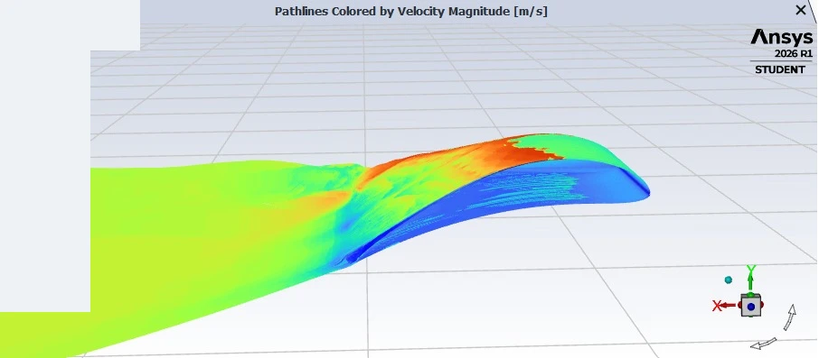
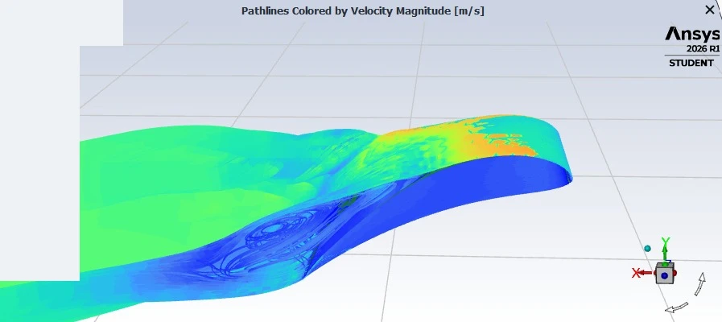
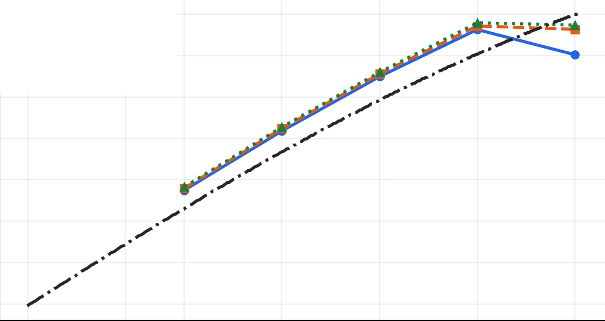
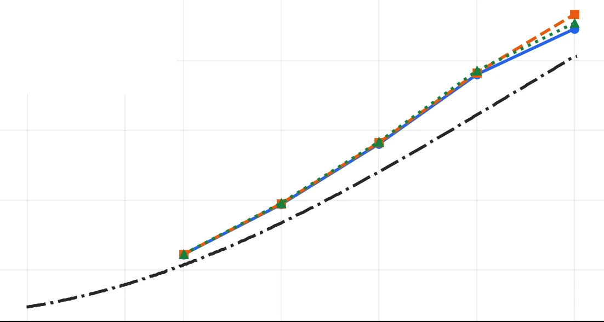
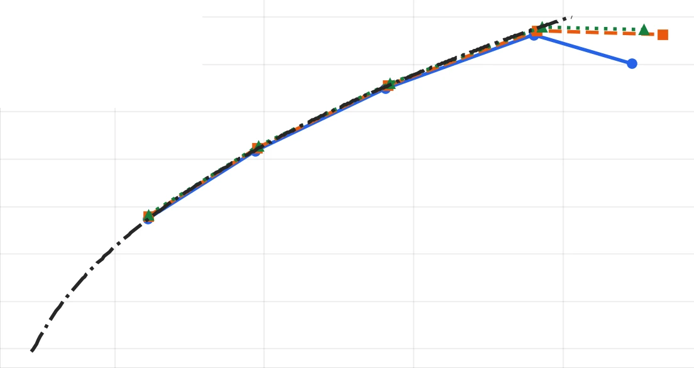
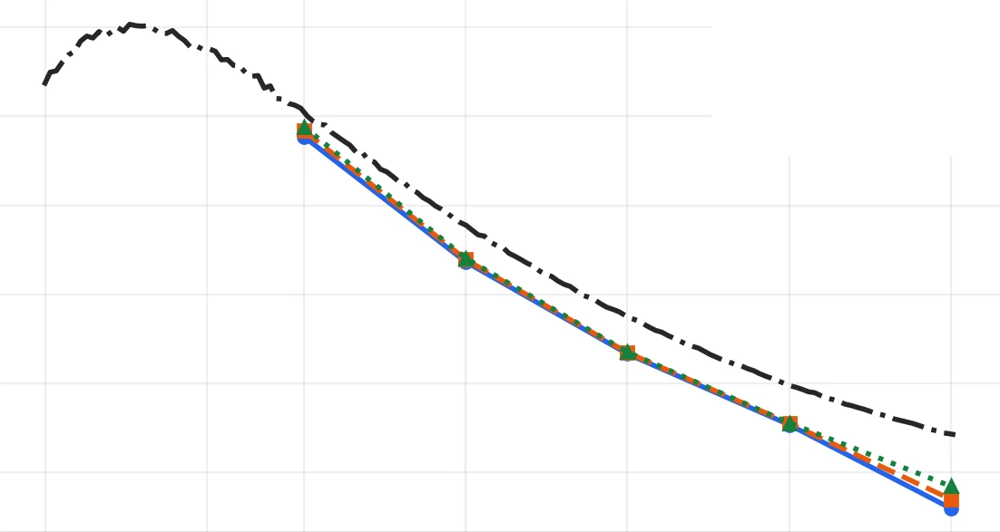

Build and mesh
Prepared the wing geometry and a half-wing symmetry domain. Generated a poly-hexcore mesh with near-wall layers, and used y+ to check near-wall mesh resolution against the turbulence treatment.
AERODYNAMICS / COMPUTATIONAL FLUID DYNAMICS
Investigating separation, aerodynamic performance and evolving vortex structures through steady and transient CFD.
Pathlines colored by speed reveal the low-speed region and evolving flow around the wing. Colors indicate relative speed within this view; numerical scales are omitted.
The isosurface highlights regions where rotation dominates strain. Its evolving shape helps examine vortex organization and unsteadiness. This threshold is a visualization choice, not a boundary that directly identifies stall.
Two views of the transient study. Loop restarts are playback transitions, not evidence of a periodic flow cycle.
THE ENGINEERING QUESTION
The aircraft’s geometric and packaging requirements called for a thick, very high-lift airfoil.
I wanted to understand the resulting wing’s overall aerodynamic behavior: lift–drag trends, flow separation and stall-related behavior beyond the predictions available from XFLR5. The transient study then examined how vortices formed and whether the flow structures settled or showed sustained oscillations.
I carried out the complete workflow, from geometry and meshing to solver setup, post-processing and interpretation.
METHOD
Prepared the wing geometry and a half-wing symmetry domain. Generated a poly-hexcore mesh with near-wall layers, and used y+ to check near-wall mesh resolution against the turbulence treatment.
Used SST k–ω in Fluent to sweep speed and angle of attack. Processed full-wing forces, compared aerodynamic trends and inspected the flow at representative conditions.
Ran a transient analysis of the high-angle condition. Examined velocity and normalized Q visualizations to investigate the evolution of separated flow and vortex structures.
The y+ check supports near-wall mesh assessment. Mesh and time-step independence are separate verification steps; the CFD results are not presented as experimentally validated stall measurements.
STEADY FLOW COMPARISON
The two views illustrate the change from predominantly attached flow to visible recirculation.

No broad recirculation region is apparent in this view. Local separation cannot be ruled out from pathlines alone.

A low-speed recirculating region accompanies a lift plateau or decrease and rising drag.
Each view has its own color scale. Colors should not be compared quantitatively between the images.
AERODYNAMIC TRENDS
Public previews of the curves from the comparison report. Axis values and operating conditions are omitted; the original curve shapes are retained.

CFD captures a plateau or reduction at the high-angle end of the sweep.

The drag penalty becomes more pronounced at higher angles.

The methods show similar trends before diverging in the high-lift region.

Additional angle ultimately costs efficiency without useful lift gain.
These are steady aerodynamic polars, not time histories or convergence plots. XFLR5 was digitized from a supplied plot; its operating conditions and angular reference were not fully reconciled. The comparison is qualitative.
INTERPRETATION
The transient flow developed toward a visually settled pattern after the initial evolution. The velocity and Q views helped distinguish the development of flow structures from an isolated steady-state image.
Visual settling alone does not establish that every vortex is steady or that force oscillations have vanished. Final force histories and frequency analysis would be needed to quantify sustained oscillation.
DESIGN OUTCOMES
The aerodynamic trends informed a revised incidence choice, balancing lift generation with drag during the takeoff run.
Vortex observations informed the decision to incorporate endplates and define their spanwise extent. Their aerodynamic benefit requires a dedicated comparison.
The wing results were incorporated into takeoff calculations so the performance estimate reflected the simulated aerodynamic behavior.
Selected geometry, operating conditions and performance values are withheld. This case study presents the engineering process and qualitative findings.
Explore more work →